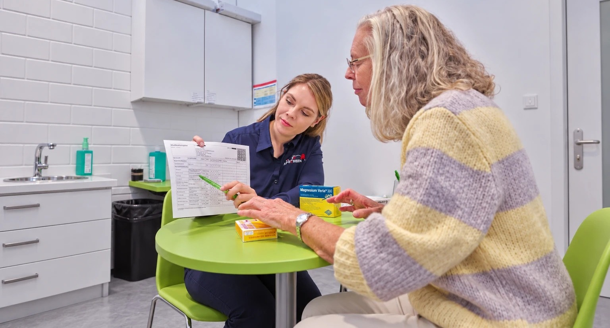

Kostenlos für gesetzlich und privat Versicherte
5 oder mehr Medikamente? Wir prüfen, ob sie zusammenpassen.
Ab fünf Dauermedikamenten haben Sie Anspruch auf eine kostenlose Medikationsberatung in Ihrer sk-Apotheke.
- Kostenlos für gesetzlich und privat Versicherte
- Von Apotheker:innen durchgeführt
- Nur 3 kurze Fragen im Anspruchs-Check
Kennen Sie das?
5 oder mehr Medikamente.
Verträgt sich das eigentlich alles?
Mehrere Erkrankungen, verschiedene Fachärzt:innen, mehrere Rezepte – ganz normale Fragen, bei denen wir genau hinschauen.
Wechselwirkungen
Wir prüfen, ob sich Ihre Medikamente gegenseitig beeinflussen können.
Manche Wirkstoffe verstärken oder schwächen sich gegenseitig ab, wenn sie zusammen eingenommen werden – das kann die Wirkung verändern oder Nebenwirkungen begünstigen. Wir prüfen Ihre gesamte Medikation mit einer pharmazeutischen Interaktionsdatenbank und besprechen relevante Wechselwirkungen mit Ihnen im Gespräch.
Doppelmedikationen
Wir erkennen, wenn Wirkstoffe unbeabsichtigt doppelt verordnet wurden.
Wenn mehrere Ärzt:innen unabhängig voneinander verordnen, kann es passieren, dass derselbe Wirkstoff unter verschiedenen Handelsnamen zweimal verschrieben wird – oft unbemerkt. Wir gleichen alle Ihre Medikamente ab und weisen Sie auf mögliche Doppelverordnungen hin.
Anwendungsprobleme
Wir klären offene Fragen zur richtigen Einnahme – z. B. Zeitpunkt und Dosierung.
Ob vor oder nach dem Essen, morgens oder abends, ganz oder geteilt – die richtige Einnahme entscheidet oft über die Wirksamkeit. Wir gehen jedes Medikament mit Ihnen durch und klären, worauf Sie im Alltag konkret achten sollten.
Ergebnisvermittlung
Wir besprechen die Ergebnisse verständlich mit Ihnen.
Wir gehen die Ergebnisse gemeinsam mit Ihnen durch und erklären, worauf es ankommt. Meist haben Sie bereits einen Medikationsplan, den wir dann besprechen – bei Bedarf aktualisieren oder erstellen wir auch einen neuen, übersichtlich für sich selbst, Angehörige oder den nächsten Arztbesuch.
Für wen ist das gedacht?
Vielleicht kennen Sie diese Situation?

Sie nehmen selbst mehrere Medikamente ein
„Verträgt sich das eigentlich alles?“ · „Warum bin ich in letzter Zeit so müde?“
Verschiedene Ärzt:innen verordnen unabhängig voneinander – z. B. gegen Bluthochdruck, Diabetes oder Cholesterin.

Sie unterstützen Angehörige
„Kann meine Mutter diese Medikamente zusammen einnehmen?“
Sie kümmern sich um Rezepte und Medikamente eines Angehörigen und möchten sichergehen, dass alles passt.
So läuft es ab
Vier Schritte zu mehr Sicherheit
Unkompliziert, ohne Papierkram und ohne Wartezeit – in wenigen Minuten erledigt.
-
1
Nur 30 Sekunden
Anspruch prüfen
In wenigen Fragen unverbindlich klären, ob Sie anspruchsberechtigt sind.
Jetzt prüfen ↓ -
2
Sofort möglich
Termin vereinbaren
Online anfragen oder direkt in Ihrer sk-Apotheke anrufen.
Termin vereinbaren ↓ -
3
Ca. 20 Minuten
Erstgespräch
Bringen Sie alle Medikamente mit. Unsere Apotheker:innen besprechen mit Ihnen die gesamte Medikation.
-
4
Oft im Gespräch
Ergebnisvermittlung
Wir besprechen die Ergebnisse und konkrete Empfehlungen mit Ihnen.
Nur 3 Fragen
Einfacher Anspruchs-Check
Beantworten Sie drei kurze Fragen – unverbindlich und kostenlos.
 Ihre Angaben werden nicht gespeichert und nicht an Dritte weitergegeben.
Ihre Angaben werden nicht gespeichert und nicht an Dritte weitergegeben.
Frage 1 von 3
Nehmen Sie mindestens fünf verschiedene Medikamente dauerhaft ein – voraussichtlich mindestens 28 Tage?
Frage 2 von 3
Sind diese Medikamente ärztlich verordnet?
Frage 3 von 3
Sind Sie gesetzlich oder privat krankenversichert?
Sie haben Anspruch!
Vereinbaren Sie jetzt einen Termin – online, telefonisch oder direkt vor Ort in Ihrer sk-Apotheke.
Alternativ auch ganz unkompliziert vor Ort in Ihrer sk-Apotheke.
Diese Beratung passt aktuell vermutlich nicht zu Ihrer Situation.
Die kostenlose Medikationsberatung richtet sich an Menschen, die dauerhaft fünf oder mehr ärztlich verordnete Medikamente einnehmen. Haben Sie trotzdem Fragen zu Ihren Medikamenten? Wir sind gern für Sie da.
In der Apotheke anrufen
Familienunternehmen seit 1984
Durchgeführt von erfahrenen sk-Apotheker:innen
„Eine lange Medikamentenliste ist heute keine Seltenheit – und kein Grund zur Sorge. Wir nehmen uns Zeit, hören genau zu und erklären alles in Ruhe. Mit über 40 Jahren Erfahrung wissen wir genau, worauf es ankommt.“
Häufige Fragen
Gut zu wissen
Beim Medikationscheck betrachten unsere Apotheker:innen Ihre gesamte Medikation im Zusammenspiel – einschließlich relevanter Selbstmedikation – und prüfen unter anderem auf mögliche Wechselwirkungen, Doppelmedikationen und Anwendungsprobleme. Sie erhalten anschließend einen aktualisierten Medikationsplan.
Grundsätzlich gesetzlich versicherte Patient:innen, die dauerhaft – voraussichtlich mindestens 28 Tage – fünf oder mehr verordnete Medikamente gleichzeitig einnehmen. Die genaue Anspruchsprüfung erfolgt individuell in der Apotheke.
Das lässt sich pauschal nicht beantworten, da es stark von der individuellen Medikation abhängt. Manche Wirkstoffkombinationen können sich gegenseitig verstärken, abschwächen oder Nebenwirkungen begünstigen. Genau das prüfen wir im Rahmen der Medikationsberatung für Sie.
Am zuverlässigsten im persönlichen Gespräch mit unseren Apotheker:innen im Rahmen der Medikationsberatung – dort wird Ihre gesamte Medikation strukturiert erfasst und geprüft.
Polymedikation bezeichnet die gleichzeitige, dauerhafte Einnahme mehrerer Medikamente – häufig ab fünf verschiedenen Wirkstoffen. Je mehr Medikamente gleichzeitig eingenommen werden, desto wichtiger wird die Prüfung möglicher Wechselwirkungen.
Passen Ihre Medikamente zusammen?
Finden Sie es heraus – kostenlos und unverbindlich. So erreichen Sie uns:
Online
Termin buchen auf
termin.skapo.de
Telefonisch
0421 59 75 68 0
kostenfrei erreichbar
Vor Ort
Ganz unkompliziert
in Ihrer sk-Apotheke